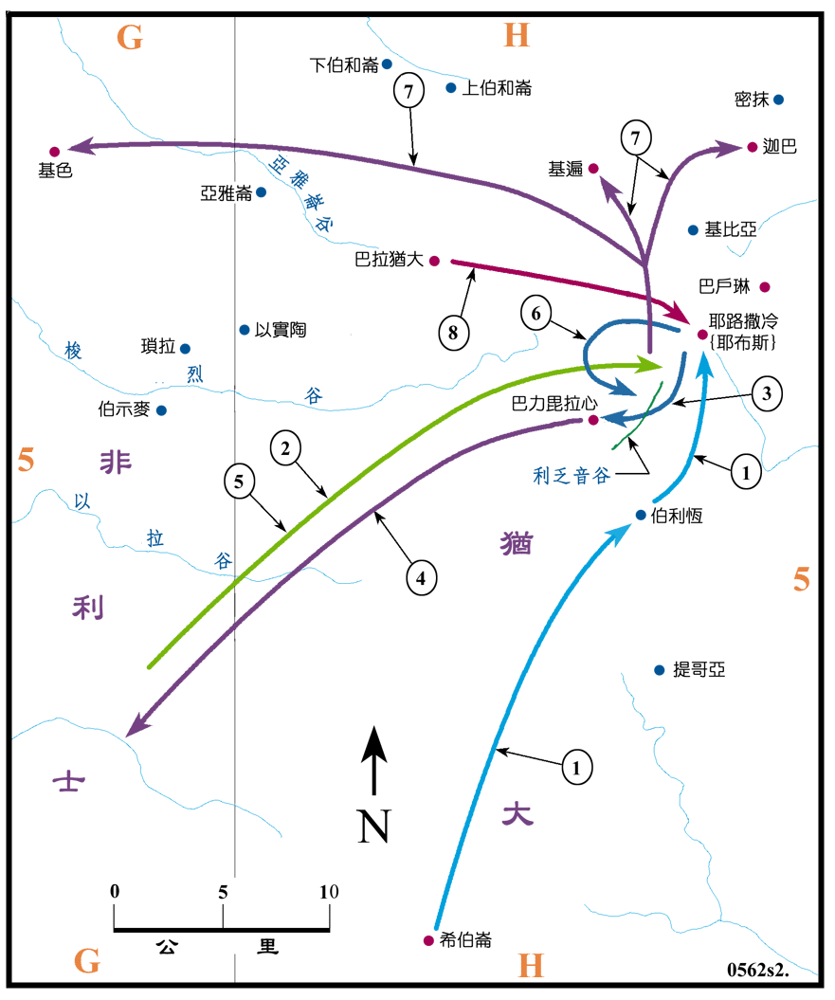

1003～1000?BC

行动线说明
| 序号 | 圣经 | 说明 |
|---|---|---|
| 1 | 撒下5:6-10，代上11:4 | 大卫攻取耶路撒冷作为首都。 |
| 2 | 撒下5:17-18，代上14:8-9 | 非利士人攻打耶路撒冷，散布在利乏音谷。 |
| 3 | 撒下5:19-20，代上14:10-11 | 大卫在巴力 拉心击败非利士人。 |
| 4 | 撒下5:21，代上14:12 | 非利士人留下偶像就逃回去了。 |
| 5 | 撒下5:22，代上14:13 | 非利士人又来到利乏音谷，要攻打耶路撒冷。 |
| 6 | 撒下5:23-25，代上14:14-16 | 大卫从背后攻打非利士人。 |
| 7 | 撒下5:25，代上14:16 | 非利士人败去，大卫就攻打非利士人，从迦巴到基色 (代上14:16 所记是从基遍到基色)。 |
| 8 | 撒下6:1-19，代上13:1-14 | 大卫将约柜从巴拉犹大运到耶路撒冷。 |
扫罗去世之时，非利士人非常的强大，除占有中南部沿海之地外，更入侵到米吉多、他纳、基利波山，并已到达约但河谷的伯善城。待大卫定都耶路撒冷，非利士两次大举来犯，但都被击溃，而且大卫更乘胜收复了从迦巴到基色间的很多失地，就巩固了其军事上的地位，再把约柜迎来，就使耶路撒冷成为宗教上的中心，奠定了国家发展的基础。